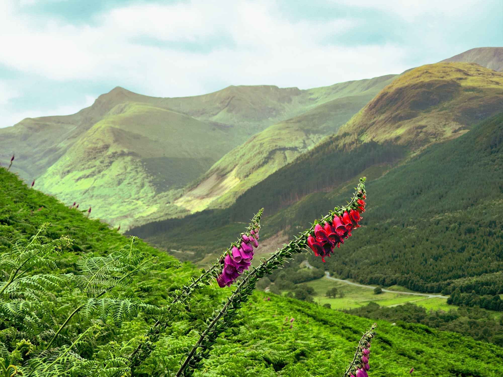
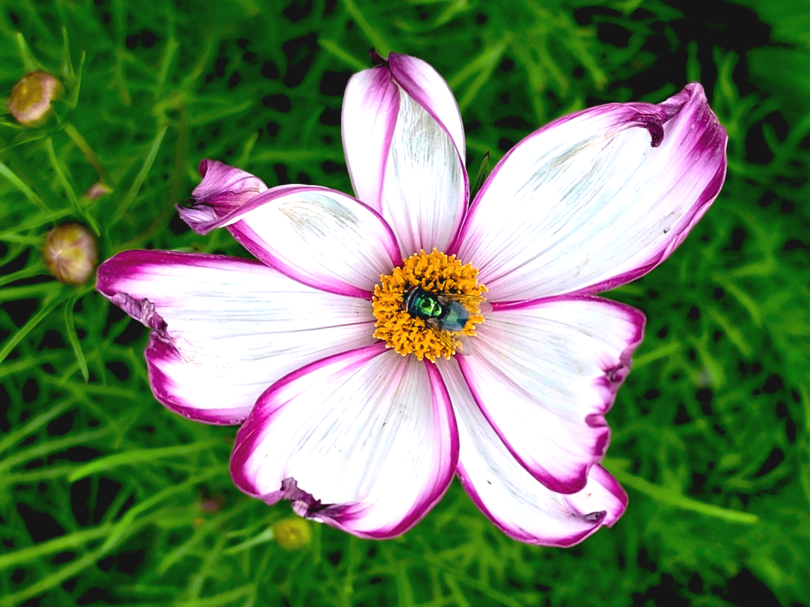
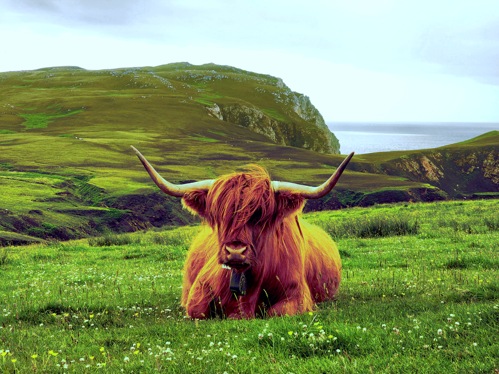

Denna uppgift har gått ut på att skapa en webbplats som presenterar ett antal redigerade bilder. Bilderna har behandlats så att de blivit enhetliga med varandra och med webbplatsens design. Webbplatsen består av tre sidor och har ett fungerande navigationssystem som gör det möjligt att bläddra mellan sidorna. Alla sidor innehåller logotyp och favicon, och webbplatsen är responsiv så att den fungerar bra på olika enheter och skärmstorlekar. De givna bilderna har behandlats så att de fått en enhetlig stil och har publicerats på. Program för redigering av bilderna har varit GIMP, och skapandet av logotyper Inkscape.